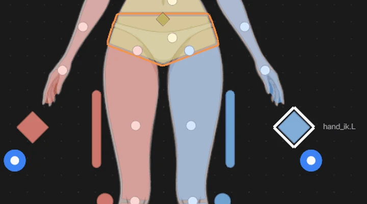
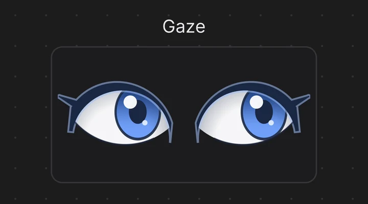
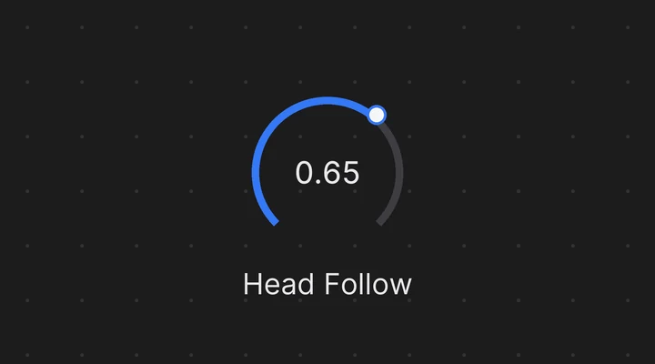

Select
- Click a button: select its bone
- Shift click: add it to the selection
- Drag on empty space: box select bones
- Right-click: the Insert Keyframe pie
A picker is a canvas of buttons that select the bones of your rig. Like any canvas, it can also hold sliders, toggles, labels and images: a knob for the jaw, a pad for the eyes, a switch for IK and FK.
Left Right Centre Root

The picker belongs to the armature data, so it travels with the rig, also when the rig is linked or appended. Make another armature active and the editor shows that armature's picker. A picker never poses the wrong rig.
Tip: buttons remember their bone by name and by a hidden id, so they follow renamed bones.
With the mouse over the picker, it works as if the mouse were in the 3D Viewport: G R S, I, A, Alt A, H, copy and paste pose...
Open the toolbar (T) to pick what a press on a button does: Select & Control, or Move, Rotate, Scale and Gimball: press a button and drag to transform its bone right away.
The active bone's name shows next to its button while you pose. Choose Off, Active Bone or Selected Bones in the sidebar's Armature tab.
Select the generated rig. In the picker's Edit Mode, press Shift A and choose Bone Picker > Humanoid Body (Rigify). The shapes are made to measure for an adult body: Adult Male or Adult Female.
The silhouette split into head, neck, chest, torso, hips, shoulders, arms, hands, legs and feet, plus the IK hands and feet, the elbow and knee poles, the spine and the tweaks.
Both hands, large: the palm, every finger segment, the fingertips and the finger masters. Under each wrist: the IK hand, the FK hand and the hand tweak.
Both feet, large: heel, foot, ball, toe controls and every toe. Add toe chains to the metarig for one control per toe.
Left is blue, right is red, the centre is yellow and the root is purple. The Body page is a front view. Hands & Feet View sets the other two: Front, or Own, as you see your own hands and feet.
With IK/FK Switches on, each arm and leg gets a Rigify IK/FK puck right next to its IK hand or foot. Bones your rig doesn't have are skipped, and a warning lists them.

A Button, a Button Image or a Geometry Shape selects its bone. Each can show a small round puck at its edge that flips the limb between IK and FK. On a Rigify limb, the Rigify IK/FK button reads the rig's drivers and sets everything for you. The puck follows the property, is keyed with Auto Keying, and every click is one undo step.

A Lineal 2D pad drives two properties at once, for eyes, jaws or facial controls. Set Look to Eyes and it becomes a pair of eyes that look where you drag. Add one ready to go with Shift A > Data > Numbers > Gaze (Eyes): on a Rigify face rig it is bound to the eye target right away.

Rigify keeps many settings on its controls as custom properties: IK stretch, follow, FK limb follow. Bind a Radial or Lineal slider with the eyedropper and right-click the property.
Shift A > Bone Picker > Bone Collection for a toggle that shows, hides or solos one. Sync Bone Collections Visibility hides the buttons of hidden collections, so the picker matches the viewport.
Press Tab to edit the picker. Moving things around works like any canvas, smart snapping included.
Buttons of bones named with a side (hand.L, hand_R, Left / Right) know their other side. Move, resize or rotate one and the other follows across the red centre line.
A Geometry Shape takes any flat shape: built-in, your library, or the canvas. Utils > Import Geo Collection turns flat meshes into buttons, bound to bones of the same name.
Shift A > Graphics > Backdrop Image puts a reference of the character behind its buttons, faded and in grey. In Pose Mode clicks go through it; Lock keeps it put while you edit.
Regenerated the rig, or pasted buttons from another picker? Utils > Repair Bone Bindings follows renamed bones, binds by name, and reports the bones still missing.
No armature, not in Pose Mode, another rig's picker: the picker shows a card that says why, with a button to fix it, such as Enter Pose Mode.
Save a picker as a global preset. On another rig with the same bone names, it works right away, and the presets menu shows how many of its bones the armature has.
Each opens in its own Blender window, as a copy, from Help > Demo Files.
| Demo | What's in it |
|---|---|
| Rigify Human Picker | A Rigify human with a picker in three tabs: Body (IK / FK limbs, rig settings, bone collection toggles), Face (a gaze pad and mouth pads) and Hands. |
| Simple Biped Picker | A small hand-made biped (no Rigify): a Hand Space enum, knobs that blend IK and FK, switches for bone collections. |
| Rigify Male Body Picker | An adult male Rigify human with five toes per foot, and a body chart picker: Body, Hands and Feet. |
| Rigify Female Body Picker | The same for an adult female body. |
The Armature Picker comes with FlexSpace.